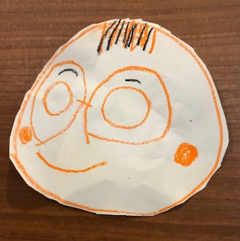
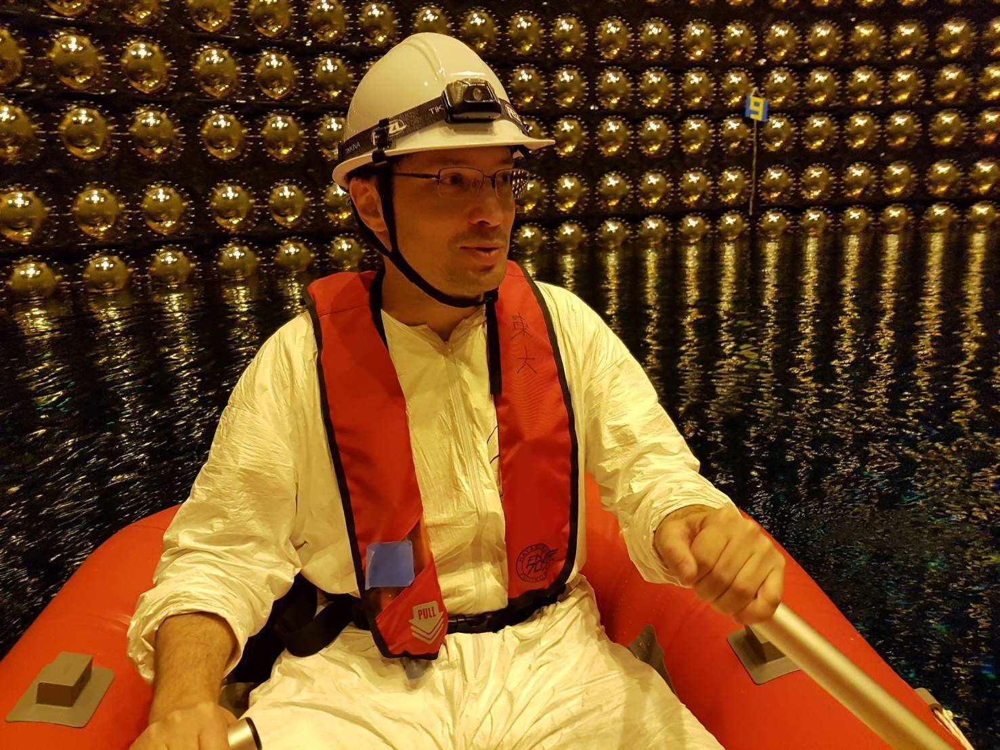
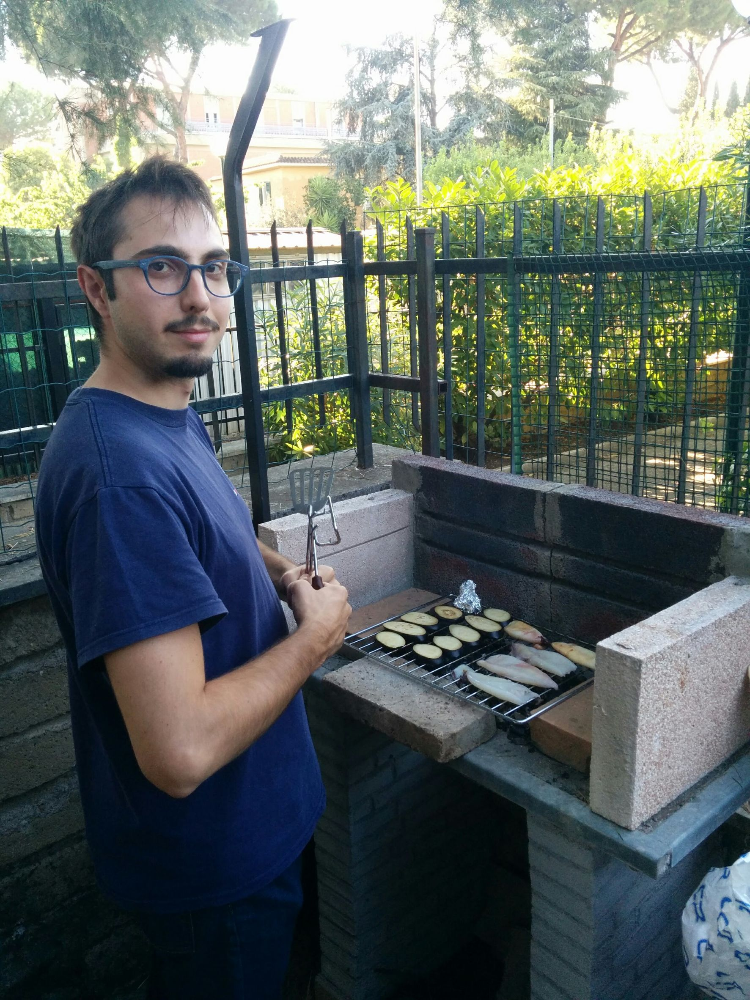
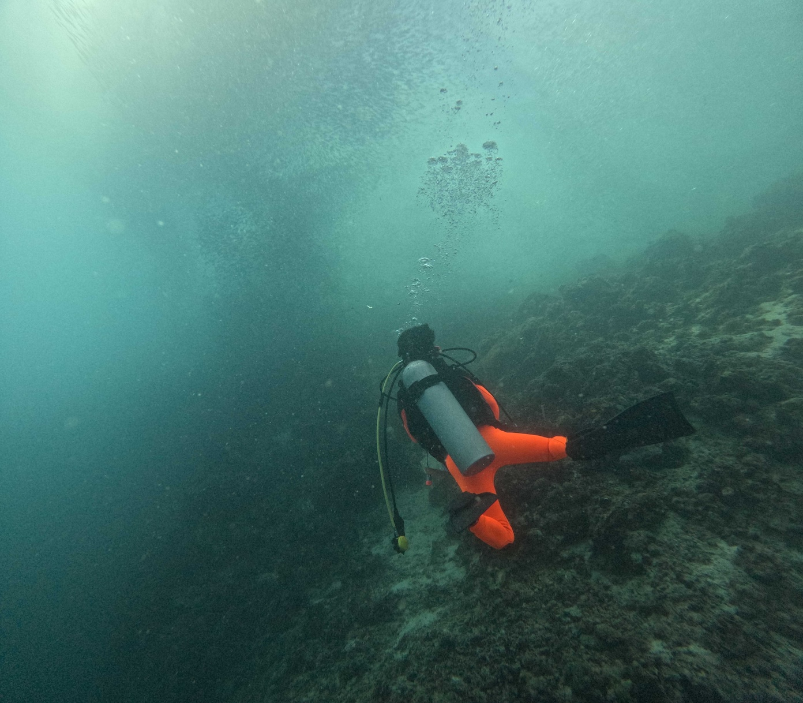
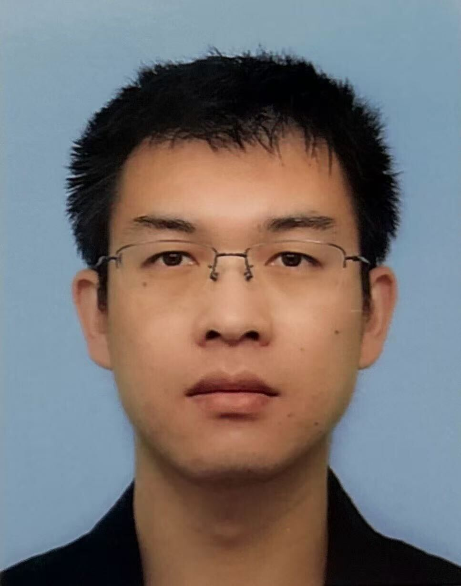
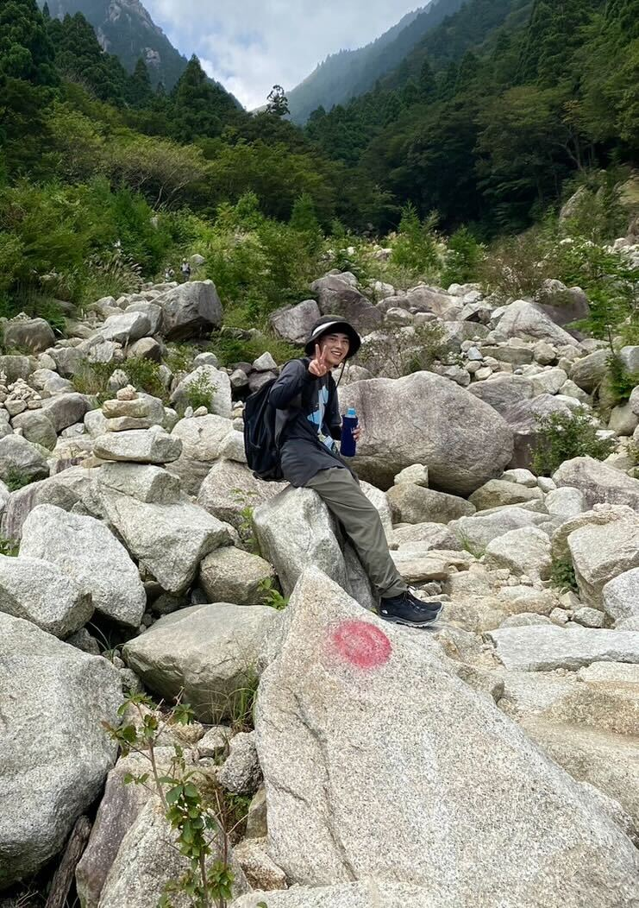
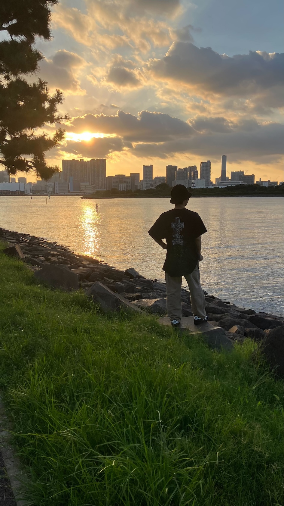
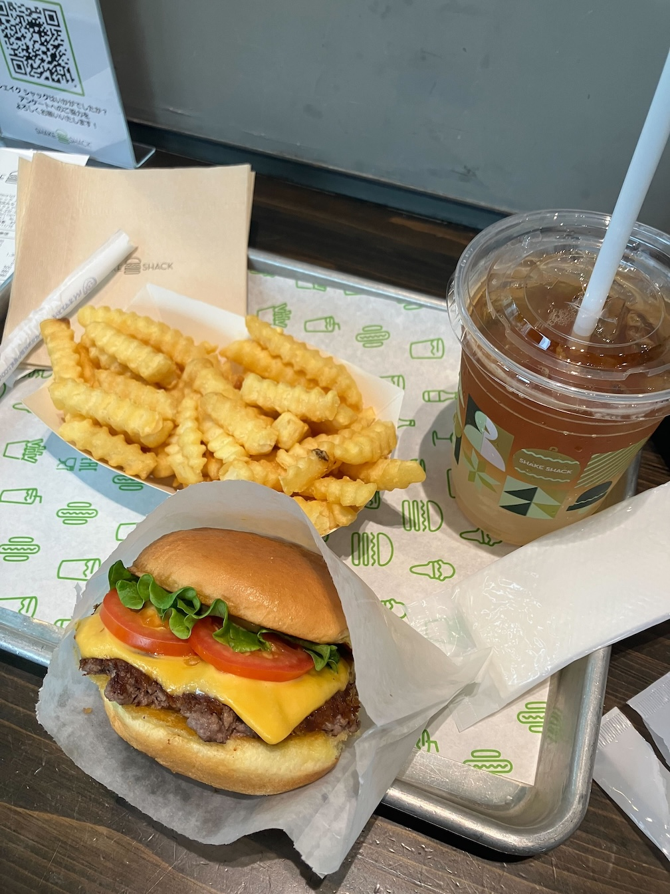
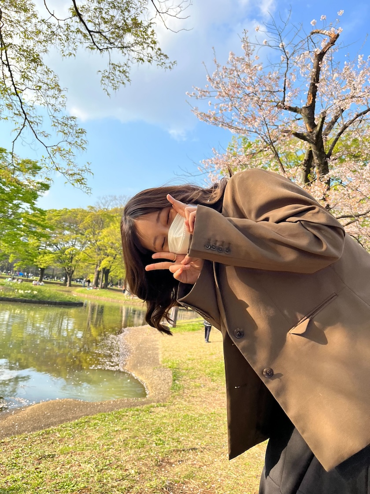

Neutrino and Astroparticle Physics Laboratory
|
Members
Staff
 |
Professor Akihiro MINAMINO | Research database@YNU e-mail: minamino-akihiro-nx[at]ynu.ac.jp Tel: 045-339-4182 |
|---|---|---|
 |
Assistant Professor Christophe Bronner | Research database@YNU e-mail: bronner-christophe-xr[at]ynu.ac.jp Tel: 045-339-4182 |  |
Researcher Giogio Pintaudi | e-mail: |
Students
 |
M2 Yuki INOMATA | e-mail: inomata-yuki-ky[at]ynu.jp |
|---|---|---|
| M2 Aoi KATO | e-mail: kato-aoi-fy[at]ynu.jp | |
 |
M2 Enming ZHONG | e-mail: zhong-enming-kv[at]ynu.jp |
 |
M2 Daigo HIRATA | e-mail: hirata-daigo-yc[at]ynu.jp |
 |
M1 Itsuki SATO | e-mail: sato-itsuki-gn[at]ynu.jp |
 |
M1 Chihaya JOKA | e-mail: jouka-chihaya-wc[at]ynu.jp |
 |
M1 Fuka NAKANISHI | e-mail: nakanishi-fuka-bf[at]ynu.jp |
| B4 Hiroto KOJIMA | kojima-hiroto-bk[at]ynu.jp | |
| B4 Shota SATO | sato-shota-vf[at]ynu.jp | |
| B4 Ren SUGIMOTO | sugimoto-ren-bk[at]ynu.jp | |
| B4 Hiryu TAKE | take-hiryu-py[at]ynu.jp | |
| B4 Kosei NOMURA | nomura-kosei-tc[at]ynu.jp | |
| B4 Ayaka FURUKI | furuki-ayaka-fb[at]ynu.jp |
OB/OG
| Fiscal year | Name | Position@YNU | New position |
|---|---|---|---|
| 2025 | Yuto SASAKI | M2(FY2025) | non-academic career |
| 2025 | Mihiro SUZUKI | M2(FY2025) | non-academic career |
| 2025 | Marin TAKANO | M2(FY2025) | non-academic career |
| 2025 | Daisuke HORIGUCHI | M2(FY2025) | non-academic career |
| 2025 | Kaito Iwahashi | B4(FY2025) | Grad student at Univ. Tokyo |
| 2025 | Aoi Kitajima | B4(FY2025) | non-academic career |
| 2025 | Shion HASHIDO | B4(FY2025) | Grad student at Institute of Science Tokyo |
| 2024 | Shun ITO | M2(FY2024) | non-academic career |
| 2024 | Ryo SHIBAYAMA | M2(FY2024) | non-academic career |
| 2024 | Ren SHIMAMURA | M2(FY2024) | non-academic career |
| 2024 | Yukitoshi OTA | B4(FY2024) | Grad student at Tohoku Univ. |
| 2024 | Koki HASHIZUME | B4(FY2024) | Grad student at Univ. Tokyo |
| 2023 | Shogo AMANAI | M2(FY2023) | non-academic career |
| 2023 | Yuto KUDO | M2(FY2023) | non-academic career |
| 2023 | Shinsei MORIYAMA | M2(FY2023) | non-academic career |
| 2023 | Shotaro ISHIDATE | B4(FY2023) | Grad student at Univ. Tsukuba |
| 2023 | Ryunosuke SOMA | B4(FY2023) | non-academic career |
| 2022 | Serina SUZUKI | M2(FY2022) | non-academic career |
| 2022 | Kouki NAGAI | M2(FY2022) | non-academic career |
| 2022 | Shota KONDOU | B4(FY2022) | Grad student at Univ. Tokyo |
| 2022 | Atsuyoshi NAGAMURA | B4(FY2022) | non-academic career |
| 2021 | Syoichi SANO | M2(FY2021) | non-academic career |
| 2021 | Kohei WADA | M2(FY2021) | non-academic career |
| 2021 | Sohei KURITA | B4(FY2021) | non-academic career |
| 2021 | Hokuto KOBAYASHI | B4(FY2021) | Grad student at Univ. Tokyo |
| 2021 | Daiki MORITA | B4(FY2021) | Grad student at Tohoku Univ. |
| 2020 | Yuna KATAYAMA | M2(FY2020) | non-academic career |
| 2020 | Ryota SASAKI | M2(FY2020) | non-academic career |
| 2020 | Yuji TANIHARA | M2(FY2020) | non-academic career |
| 2020 | Ryota KANASHIMA | B4(FY2020) | Grad student at Univ. Tokyo |
| 2020 | Ryo FUJINAKA | B4(FY2020) | Grad student at Univ. Kyoto |
| 2019 | Yuki ASADA | M2(FY2019) | non-academic career |
| 2019 | Kodai OKAMOTO | M2(FY2019) | non-academic career |
| 2019 | Tomomi GIMA | B4(FY2019) | Grad student at Tohoku Univ. |
| 2018 | Kensuke YAMAMOTO | B3(FY2018) | Grad student at Univ. Tokyo |
| 2017 | Kohei MATSUSHITA | B4(FY2017) | Grad student at Univ. Tokyo |
| 2017 | Daisuke YAMAGUCHI | B4(FY2017) | non-academic career |